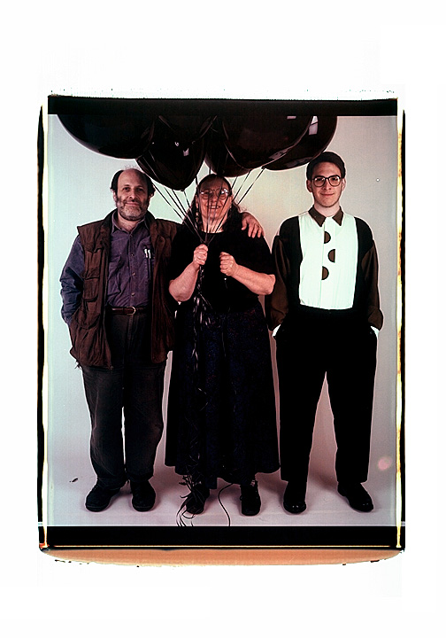
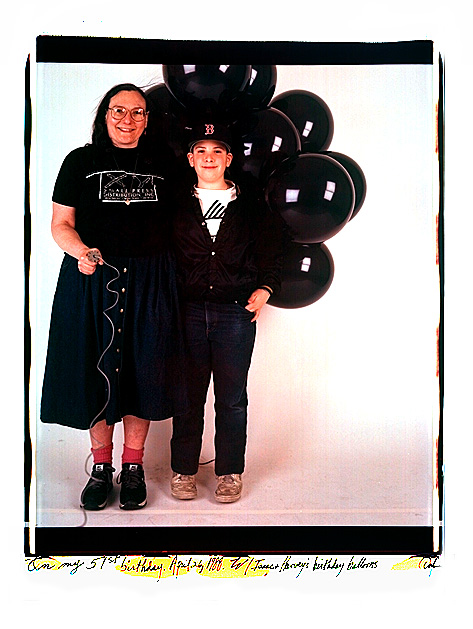
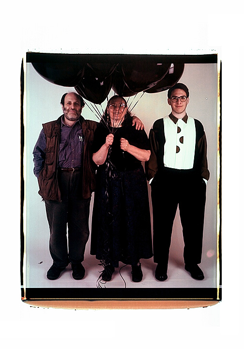
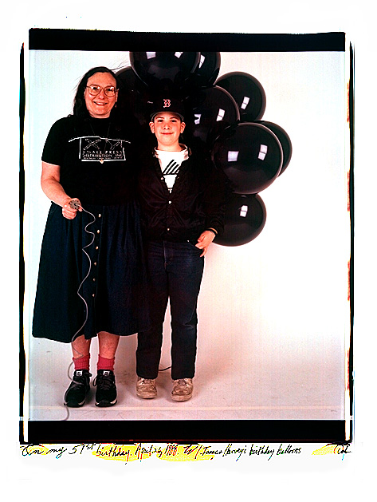

I have been photographing myself since about 1970, about five years after I picked up the camera. In the beginning, there was an initial shyness about turning my camera on myself. What me, an interesting subject? Then I went through a phase, almost religious, during which I believed that I had to take pictures of myself so that I would know what my subjects went through when they faced with my lens. I was sure that my comfort behind the camera was instrinsically related to my comfort in front of my own lense--and maybe it was.
My next phase was taking portraits to cheer myself up--to look at myself and say, hey you're not so bad. Life isn't scarring (scaring ) me so much. All this was in black and white and small format.

When I hit the big time (figuratively, with the Pol aroid 20x24) the angst that drove me just wasn't there. In front of the huge 20x24 camera, I was instinctively more commemorative, more celebrative. Maybe it was that the film was so expensive, it hardly seemed worth it to document feeling blue. Or maybe it was the scale. Who wants a big blue portrait of herself? Maybe it was that by the time I got to my studio and turned the lights and camera on, I was upbeat and thankful. Or maybe, and I think this is it, my life had changed. I didn't have the time or I didn't have the energy to focus on myself in that narrow way of my thirties.
And the latest 20x24 self-portraits: I'm forcing myself to get used to how I look at 60. To recognize that person in the pictues. I'm playing around with the first and last shots on the roll of film. And I'm playing around with words.
 

Are you wondering about the black balloons ?
It's a story: we don't make a big deal about birthdays in my family. On my 51st birthday, my husband Harvey Silverglate called me in the middle of the morning to see how my day was going. I told him turning fifty had been fine, but 51 was a different story. Being five years younger than I am, he didn't sympathize and we talked for a few minutes about stuff. Then an hour later, a man in a tux appeared with eighteen fabulous black balloons from, who else? HARVEY! He had sent me a black cloud . What could I do? Laugh and walk down the street to my camera.
Find Elsa's Books


Please change your links and bookmarks to elsadorfman.com!
Elsa thanks her cybergodmother, photo.net, her longtime, most generous host at furfly.com, and her current web host Mike Sisk at TCP/IP Ranch, LLC.
Copyright 1970-2010 © Elsa Dorfman.
Inquiries for the use of Elsa's content are welcomed!
Please
read these guidelines.
Contact
Elsa Dorfman via email or send Website Feedback to her webmaster.